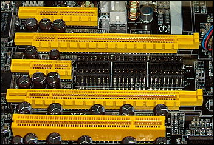
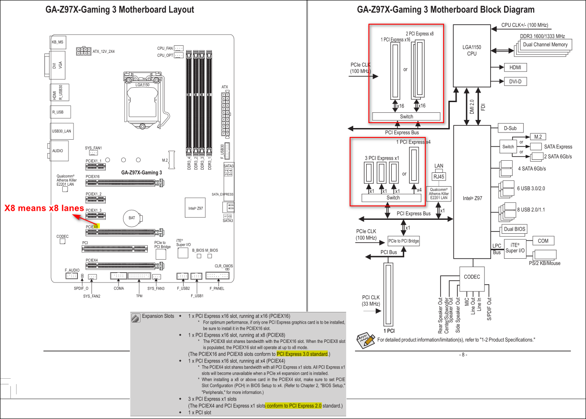

Introduction
PCI Express: It is a standard which comes in multiple generations and multiple lane configurations. PCI-E is in its 5th generation, but mostly the current shipping generation is 3rd generation also called as Gen 3. Mainly each generation improves upon the previous generation regarding the speed per lane supported by the protocol.
Below is the table for each generation and lane speed For single-lane and 16-lane links, in each direction:
========== ========== ========== Generation x1 x16 ========== ========== ========== Gen 1 250 MB/s 4 GB/s Gen 2 500 MB/s 8 GB/s Gen 3 985 MB/s 15.75 GB/s Gen 4 1.969 GB/s 31.51 GB/s Gen 5 3.938 GB/s 63 GB/s ========== ========== ==========
There are PCIE connectors in x1, x2, x4, x8, x16 configurations. The specification also makes sure in an x16 physical connector we can plugin in any card with x1, x2, x4, x8, x16. One important fact about physical connectors is, x16 physical may not be powering all the 16 lanes so for example in a motherboard if an x16 connector is fueling only x4 lanes, it means, The connector is limited to x4 speeds.

Different type of physical PCIE connectorsNow to understand each connectors capability we need to refer the motherboard manual. They explicitly talk about the supported connectors and their configuration for the CPU maximum supported lane count. After all CPU max supported PCI-E lane count is what matters and how the motherboard takes advantage of these lanes.

Gigabyte Motherboard manual description of on board PCIE connectors and their configurations